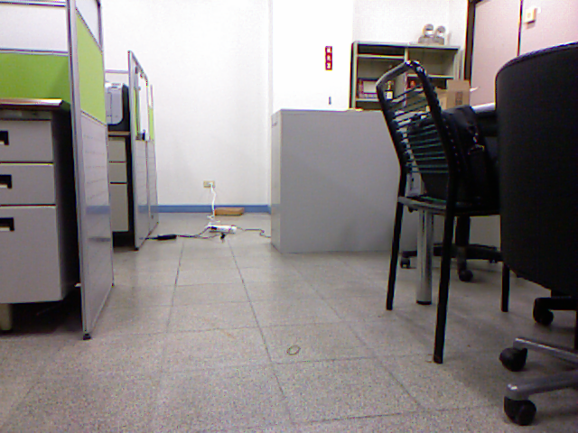
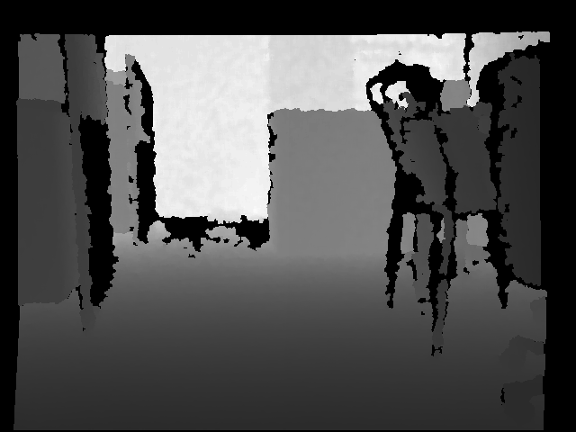

當我們好不容易產生了一個 pcd 模型後，突然發現到忘記儲存原始的 RGB 影像以及深度影像， 這個時候要怎辦呢？你可以選擇重新使用 kinect 建立新的模型並拍下影像以及深度，也可以用 更聰明的方法 - 將 pcd 檔案轉換成 RGB 影像以及深度影像。
實際上，在 pcl 1.7 版提供了以下方法，讓你可以將 point cloud 存成 PNG 文件。
void pcl::io::savePNGFile (const std::string &file_name, const pcl::PointCloud< T > &cloud);
但是如果我們使用的是 pcl 1.6 或者以下的版本呢？這時候就得手動增加這部份的 code。
template <typename T> void savePNGFile (const std::string &file_name, const pcl::PointCloud<T> &cloud) { std::vector<unsigned char> char_data(cloud.width * cloud.height * 3); for (size_t i = 0; i < cloud.points.size(); ++i) { char_data[i*3 + 0] = cloud.points[i].r; char_data[i*3 + 1] = cloud.points[i].g; char_data[i*3 + 2] = cloud.points[i].b; } vtkSmartPointer<vtkImageImport> importer = vtkSmartPointer<vtkImageImport>::New(); importer->SetNumberOfScalarComponents(3); importer->SetDataScalarTypeToUnsignedChar(); importer->SetWholeExtent (0, cloud.width - 1, 0, cloud.height - 1, 0, 0); importer->SetDataExtentToWholeExtent(); void* data = const_cast<void*> (reinterpret_cast<const void*> (&char_data[0])); importer->SetImportVoidPointer(data, 1); importer->Update(); vtkSmartPointer<vtkImageFlip> flipYFilter = vtkSmartPointer<vtkImageFlip>::New(); flipYFilter->SetFilteredAxis(1); flipYFilter->SetInputConnection(importer->GetOutputPort()); flipYFilter->Update(); vtkSmartPointer<vtkPNGWriter> writer = vtkSmartPointer<vtkPNGWriter>::New(); writer->SetFileName(file_name.c_str()); writer->SetInputConnection(flipYFilter->GetOutputPort()); writer->Write(); }
使用上面的程式碼，你就可以在 pcl 1.6 中將你的 point cloud 存成 png 圖片。
現在我想要將我的點雲轉變成為深度圖檔，這時該怎麼辦呢？你可以用下面的程式完成他:
template <typename T> void saveDepthToPNG (const std::string &file_name, const pcl::PointCloud<T> &cloud) { pcl::PointCloud<T> depth = cloud; double max = 0, min = 0; for (int i = 0; i < (int) depth.points.size(); i++) { if(depth.points[i].z > max) max = depth.points[i].z; if(depth.points[i].z < min) min = depth.points[i].z; } float scale = (max - min) / 256; for (int i = 0; i < (int) depth.points.size(); i++) { unsigned int t = depth.points[i].z / scale; // make sure pixel value between 0 ~ 255 t = (t > 255) ? 255 : (t < 0) ? 0 : t; depth.points[i].rgba = ((t << 16) | (t << 8) | t); } savePNGFile(file_name, depth); }
這個程式透過範圍的計算，將深度轉換成 0 ~ 255 的灰階值, 並將顏色塗到點雲上面， 最後再將點雲存檔成為 png 圖檔。
透過這樣的簡單步驟，我們就可以將 pcd 檔案轉換成為 RGB 彩圖 與 深度圖了。
下面列出簡單的主程式與結果
#include <iostream> #include <string> #include <cmath> #include <pcl/io/io.h> #include <pcl/io/pcd_io.h> #include <pcl/point_types.h> #include <pcl/visualization/cloud_viewer.h> typedef pcl::PointXYZRGBA PointT; int main(int argc, char *argv[]) { std::string pcd_file("room.pcd"); pcl::PointCloud<PointT>::Ptr cloud (new pcl::PointCloud<PointT>); pcl::io::loadPCDFile(pcd_file, *cloud); // save origin pcd file to png pictre std::string rgb_file("room.png"); savePNGFile(rgb_file, *cloud); // save depth image std::string depth_file("room_depth.png"); saveDepthToPNG(depth_file, *cloud); return 0; }
透過這個程式，你就可以將 room.pcd 轉換成以下兩張圖形
RGB 彩圖

深度圖
